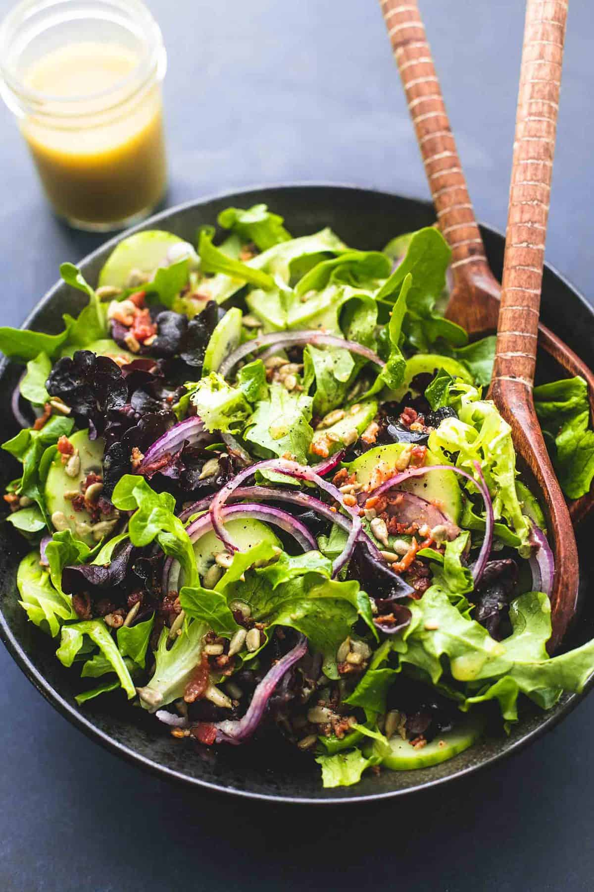

Salad

an elegant mix of greens to compliment a hearty dish
Ingredients
Base Salad
- 5 cups loosely packed mixed greens
- 2 tablespoons shelled sunflower seeds
- 1/4 cup crumbled bacon
- 1/4 red onion, thinly sliced
- 1 cucumber, peeled and thinly sliced
Dressing
- 1/4 cup dijon mustard
- 1/4 cup honey
- 1/4 cup apple cider vinegar
- 1/4 teaspoon black pepper
- 1/4 cup extra virgin olive oil
Steps
- Combine all dressing ingredients in a jar, cover, and
shake vigorously to combine.
- In a large bowl combine mixed green, sunflower seeds,
bacon, red onions, and cucumber.
- Just before serving, add dressing to tast and toss to
combine. Serve immediately.